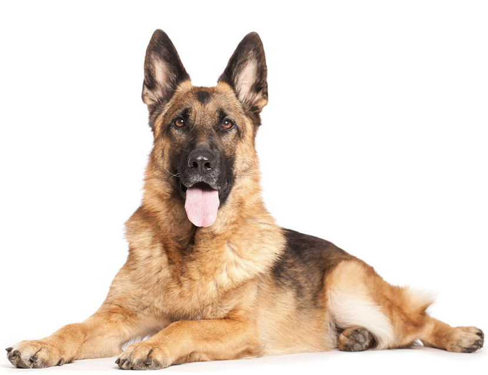

Pets!!!🐈🐕🐎
Dream pets
I don't have pets, but I love cats, dogs, and horses.
Dream cat: British Shorthair

Originating in Britain, these cats are characterized by their sturdy build, large eyes, and friendly demeanor. Their distinctive coat comes in various colors and patterns, making them charming and sought-after companions worldwide.
Dream dog: German Sheperd
The German Shepherd, a versatile and intelligent breed, is celebrated for its loyalty and work ethic. Originally bred for herding, these dogs excel in various roles, including police and military work. With a strong, agile build and a keen sense of smell, they are devoted companions and effective working partners.
Dream horse: Arabian

The Arabian horse, renowned for its elegance and stamina, has a rich history dating back thousands of years. Originating in the Arabian Peninsula, it is characterized by a distinctive head shape, high tail carriage, and spirited demeanor. Known for endurance and intelligence, it's a prized breed in various equestrian disciplines worldwide.